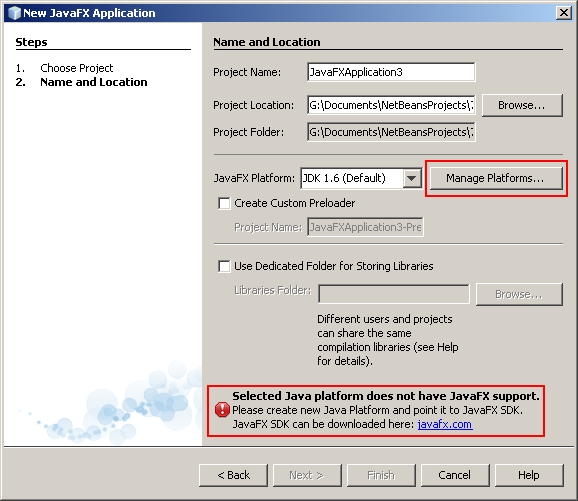
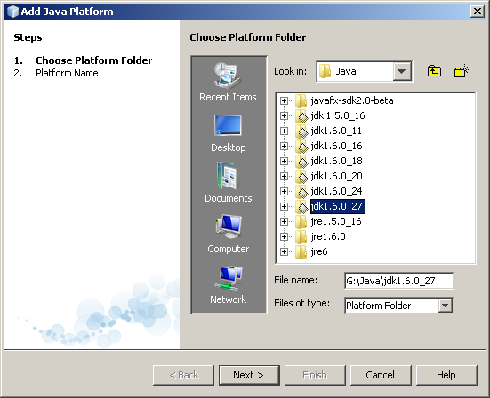
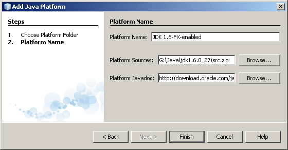
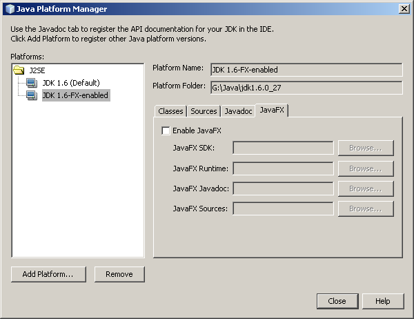
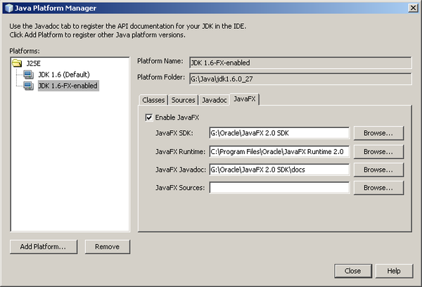

NetBeans IDEとJavaFX 2.1の設定
JavaFXは、大規模なデータ駆動型ビジネス・アプリケーションを処理できる、Javaベースの強力なUIプラットフォームを提供します。JavaFX 2は、JavaFXプラットフォームへのメジャーな更新です。このバージョンから、開発者はJavaFXアプリケーションを完全にJavaで作成できます。
NetBeans IDEは、JavaFX 2アプリケーションの作成をサポートしています。
目次

このチュートリアルに従うには、次のソフトウェアとリソースが必要です。
NetBeans IDEとJavaFX 2.1 SDKのインストール
使用しているオペレーティング・システムによっては、Java JDKにバンドルされているJavaFX 2.1をインストールできます。インストールできない場合は、JavaFX 2.1を単独でインストールしてください。
- Windowsの場合、JavaFX 2.1はJDK 1.7 update 4にバンドルされています。バンドルされたJava FX 2.1 SDKとランタイムをデフォルトの場所にインストールすると、NetBeans IDEはJavaFX対応Javaプラットフォームを自動的に作成できます。
- MacOSの場合、JavaFX 2.1はMac JDK 1.7 update 4に埋め込まれています。NetBeans IDEはJavaFX対応Javaプラットフォームを自動的に作成できます。
- JavaFX 2.1は、JavaFXダウンロード・サイトから単独でインストールすることもできます。JavaFX 2.1には、Java JDK 1.6.0 update 26以降、またはJava 7が必要です。JavaFXは、すべてのオペレーティング・システム上で動作するわけではありません。JavaFXのシステム要件のドキュメントを確認して、どのプラットフォームがJavaFXでサポートされているかを確認してください。JavaFX 2.1のシステム要件を満たせば、NetBeans IDEもインストールできます。
重要: Mac上でJavaFXを開発するには、Mac JDK 7 update 4、JavaFX 2.1 (Mac JDK 7u4にバンドル)、およびNetBeans IDE 7.1.2以降が必要です。NetBeans IDE 7.1または7.1.1を使用している場合は、入手可能なすべての更新をインストールしてNetBeans IDE 7.1.2にアップグレードしてください。
注意: JavaFX 2.1をWindowsにインストールすると、実際には、JavaFX 2.1 SDKとJavaFX 2.1ランタイムの2つのパッケージがインストールされます。
JavaFX 2.1をWindowsに手動でインストールする場合は、JavaFX 2.1 SDKとランタイムをデフォルトの場所(C:/Program Files/Oracle/)にインストールすることを検討してください。NetBeans IDEでは、JavaFX 2.1 SDKとJavaFX 2.1ランタイム用のデフォルトの場所を確認します。JavaFX 2がデフォルトの場所にあると、NetBeans IDEではJavaFX対応Javaプラットフォームが自動的に作成されます。Java JDKにバンドルされたJavaFX 2.1をインストールすると、NetBeansでJavaFX 2.1 SDKとランタイムを検出できます。
JavaFX 2.1をMacOSに手動でインストールする場合は、デフォルトの場所がないため、JavaFX対応Javaプラットフォームを手動で作成する必要があります。
JavaFX 2のアップグレード
JavaFX 2を別のバージョンにアップグレードする場合(たとえば、JavaFX 2.0からJavaFX 2.1)、JavaFX 2の旧バージョンをアンインストールすると安全です。旧バージョンを手動でアンインストールし、そのディレクトリが削除されていることを確認してください。JavaFXインストーラでは、必ずしもJavaFX 2の旧バージョンが正しくアンインストールされるとは限らないため、間違ったバージョンが使用される場合があります。
さらに、新しいFX SDKの場所が古い場所と異なる場合は、問題が発生する可能性があります。既存のデフォルトのFX対応プラットフォームは、依然として古い場所をポイントしています。この場合は、「ツール」>「Javaプラットフォーム」を開き、古いデフォルトのFX対応プラットフォームを削除します。次に、JavaFX 2の更新済バージョンを使用して、新しいデフォルトのFX対応プラットフォームを作成してください。
JavaFX対応Javaプラットフォームの作成
NetBeans IDEには、JavaFX 2.1を使用するために、JavaFX 2.1対応Javaプラットフォームが必要です。この項では、NetBeans IDEでJavaFX 2.1対応Javaプラットフォームを作成する方法について説明します。
新規JavaFXプロジェクト・ウィザードを開始したとき、または最初に既存のJavaFXプロジェクトを開いたとき、NetBeans IDEではJavaFX対応Javaプラットフォームの作成を試みます。NetBeans IDEがJavaFX対応Javaプラットフォームを自動的に作成できない場合は、警告が表示されます。この場合は、JavaFX対応Javaプラットフォームを手動で作成する必要があります。たとえば、異なるJava JDKが使用されるようにする場合は、追加のJavaFX対応Javaプラットフォームを作成できます。
この項の手順は、自動と手動のプラットフォーム作成を反映して2つの部分に分かれています。
- 新規JavaFXアプリケーション・ウィザードを開く。これが通常の開始点です。ウィザードを開くと、NetBeans IDEはJavaFX対応Javaプラットフォームの作成を試みます。NetBeansの処理が成功したら、終了です。
- JavaFX対応プラットフォームの手動での作成。自動的なプラットフォーム生成が失敗した場合、または追加のJavaFX対応プラットフォームが必要な場合は、プラットフォームを手動で作成する必要があります。
新規JavaFXアプリケーション・ウィザードを開く
JavaFX対応Javaプラットフォームの作成における最初の手順は、NetBeans IDEの新規JavaFXアプリケーション・ウィザードを開くことです。(かわりに、新規JavaFXプレローダー・ウィザードを開くこともできます。)IDEがJavaFX対応Javaプラットフォームを見つけることができない場合、IDEはJavaFX対応Javaプラットフォームの生成を試みます。IDEによってJavaFX対応Javaプラットフォームが正常に生成された場合、設定は完了です。IDEによってJavaFX対応Javaプラットフォームが生成されなかった場合は、プラットフォームを手動で作成する必要があります。
注意: 自動的なプラットフォーム生成は、JavaFX SDKとランタイムがデフォルトの場所(C:\Program Files\Oracle\)にインストールされたWindows上、およびJavaFX SDKがMac JDK 7u4に埋め込まれたMacOS上で機能します。
新規JavaFXアプリケーション・ウィザードを開くには:
- IDEで、「新規プロジェクト」アイコンをクリックします(または「ファイル」>「新規プロジェクト」あるいは[Ctrl]-[Shift]-[N])。新規プロジェクト・ウィザードが開きます。

- 「JavaFX」カテゴリを選択します。「プロジェクト」の下の「JavaFXアプリケーション」を選択します。「次」をクリックします。「名前と場所」パネルが開きます。IDEはJavaFX SDKを探し、JavaFX対応Javaプラットフォームの生成を試みます。
ここで、NetBeans IDEによってJavaFX対応プラットフォームが生成されたかどうかに応じて、2つの画面のどちらかが表示されます。
- プラットフォームが生成された場合。IDEによって、JavaFX対応Javaプラットフォームが生成されます。このJavaFX対応プラットフォームは、デフォルトではIDEで使用されるのと同じJDKソースを使用します。生成されたプラットフォームの名前は、「デフォルトのJava FXプラットフォーム」です。IDEは、このプラットフォームを自動的に選択します。異なるJDKを使用する追加のJavaFX対応Javaプラットフォームを作成しないかぎり、設定は完了です。ここで、チュートリアルを実行できます。追加のJavaFX対応Javaプラットフォームを作成する場合は、JavaFX対応プラットフォームの手動での作成を参照してください。

- プラットフォームが生成されなかった場合。「JavaFXプラットフォーム」リストに、JavaFX対応プラットフォームが表示されません。パネルの最下部に警告が表示されます。「JavaFX対応プラットフォームの手動での作成」に進みます。

JavaFX対応プラットフォームの手動での作成
次の場合は、JavaFX対応Javaプラットフォームを手動で作成する必要があります。
- 新規JavaFXアプリケーション・ウィザードを開くか、または新規JavaFXプレローダー・ウィザードを開いたときに、NetBeans IDEがJavaFX対応Javaプラットフォームの生成に失敗した場合。
- IDEがデフォルトで使用するJDKとは異なるJava JDKに基づいたJavaFX対応プラットフォームが必要な場合。たとえば、IDEはJava JDK 1.6.0 update 27を使用しているが、Java 7を使用してJavaFXアプリケーションをビルドする場合。
JavaFX対応プラットフォームを手動で作成するには:
- NetBeans IDE Javaプラットフォーム・マネージャを開きます。プラットフォーム・マネージャは、次の方法で開くことができます。
- 新規JavaFXアプリケーション・ウィザードまたは新規JavaFXプレローダー・ウィザードで、「プラットフォームの管理」をクリックします。
- 「ツール」メニューを展開し、「Javaプラットフォーム」を選択します。
- Javaプロジェクトの「プロジェクト・プロパティ」を開きます。ライブラリ・ページに移動します。「プラットフォームの管理」をクリックします。
- 「プラットフォームの追加」をクリックします。Javaプラットフォームの追加ウィザードが開き、「Javaプラットフォームを選択」パネルが表示されます。目的のJDKを参照します。

- JDKを選択します。JDK 1.6 update 26以降(またはJDK 7)を選択する必要があります。「次」をクリックします。「プラットフォーム名」パネルが開きます。

- 新しいプラットフォームにわかりやすい、任意の名前を付け、「終了」をクリックします。プラットフォーム・マネージャに戻ります。作成したプラットフォームが表示されます。

- 作成したプラットフォームを選択します。そのプラットフォームの「JavaFX」タブを開きます。現在、このプラットフォームでJavaFXは有効になっていません。「JavaFXを有効にする」ボックスをクリックします。JavaFXプラットフォームが無効であるという警告が表示されます。
- 「JavaFX SDK」フィールドの横にある「参照」をクリックします。JavaFX 2.1 SDKフォルダを参照します。

- 「開く」をクリックします。Javaプラットフォーム・マネージャに戻ります。「JavaFX SDK」および「JavaFX Javadoc」フィールドに値が入力されました。JavaFXランタイム2がJavaFX 2.1 SDKと同じディレクトリ内にある場合は、「JavaFXランタイム」フィールドにも値が入力されています。JavaFXランタイムがSDKとは異なるディレクトリ内にある場合は、ランタイムを参照します。「ソース」フィールドには何も必要ありません。
「JavaFX 2.1 SDK」、「JavaFX Javadoc」、および「JavaFXランタイム」フィールドに値が入力されていて、JavaFXプラットフォームが無効であるという警告が表示されていない場合は、「閉じる」をクリックします。JavaFX対応プラットフォームが完成しました。

- 新規JavaFXアプリケーション・ウィザードに戻るか、またはこのウィザードを開いた場合は、作成したJavaFX対応プラットフォームを選択する必要があります。「JavaFXプラットフォーム」リストから、作成したJavaFX 2.1対応プラットフォームを選択します。選択したJavaプラットフォームがJavaFXをサポートしていないという警告が表示されていた場合は、その警告が消えます。

「終了」をクリックしてプロジェクトを作成するか、または「取消し」をクリックできます。新規プロジェクト・ウィザードを取り消した場合でも、新しいプラットフォームは保持されます。
チュートリアル
JavaFX 2.1を使用するようにNetBeans IDEを設定したら、NetBeansプロジェクトとしてJavaFXのチュートリアルを実行してみてください。
トラブル・シューティング
- JavaFXランタイムが古いという警告が表示されます。以前のバージョンのJavaFX 2をインストールしたことがありますか。インストーラで古いランタイムが正しくアンインストールされなかった可能性があります。修正: 古いバージョンのJavaFX 2をすべて、手動でアンインストールします。必ず、アンインストールの後に残ったディレクトリをすべて削除してください。
- このドキュメントでは説明されていない別の問題が発生しています。このドキュメントに欠けている内容があると思われる場合は、下の「このチュートリアルに関するご意見をお寄せください」のリンクをクリックして著者に知らせてください。NetBeans IDEでのJavaFX 2サポートに不具合を見つけたと思われる場合は、その不具合を報告してください。enter_bug.cgiページで、javafx製品を選択します。
学習に戻る